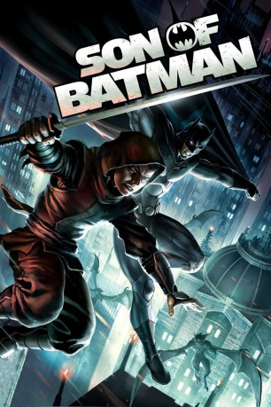

#9211 Son of Batman
 
 IMDB-Wertung: 6.7 / 10
IMDB-Wertung: 6.7 / 10  Tomatometer: 64
Tomatometer: 64  Metascore: 0
Metascore: 0 
Batman erfährt, dass er gemeinsam mit Talia al Ghul einen Son hat: Damian. Den will er zuerst zu seinem Nachfolger aufbauen, doch Damian hat seinen eigenen Weg Dinge zu erledigen und geht dabei mit äußerster Brutalität vor. Außerdem will er sich für den von Deathstroke getöteten Ra´s Al Ghul rächen, was Batman natürlich verhindern muss.
Jahr: 2014
Dauer: 74 Minuten
FSK: 16
Land: USA Studio: Warner Home VideoTonspuren: DD5.1 - ,
Untertitel:
Auflösung: 1080p (1920x1080) Größe: 2519 MB
Genre: Action, Drama, Abenteuer, Fantasy, Krimi, Animation/Trick, Mystery
Regisseur: Ethan Spaulding
Drehbuch: Bob Kane
Soundtrack: Frederik Wiedmann
Darsteller:
Datei: X:\Comic-Trick\Batman\Son of Batman (2014, FSK16, 1920x1080).mkv seit 19.07.2018
Festplatte: Comicverfilmungen+MusikCD
 Es gibt insgesamt 19 Filme in der Gruppe 'Comic-Trick\Batman'
Es gibt insgesamt 19 Filme in der Gruppe 'Comic-Trick\Batman'